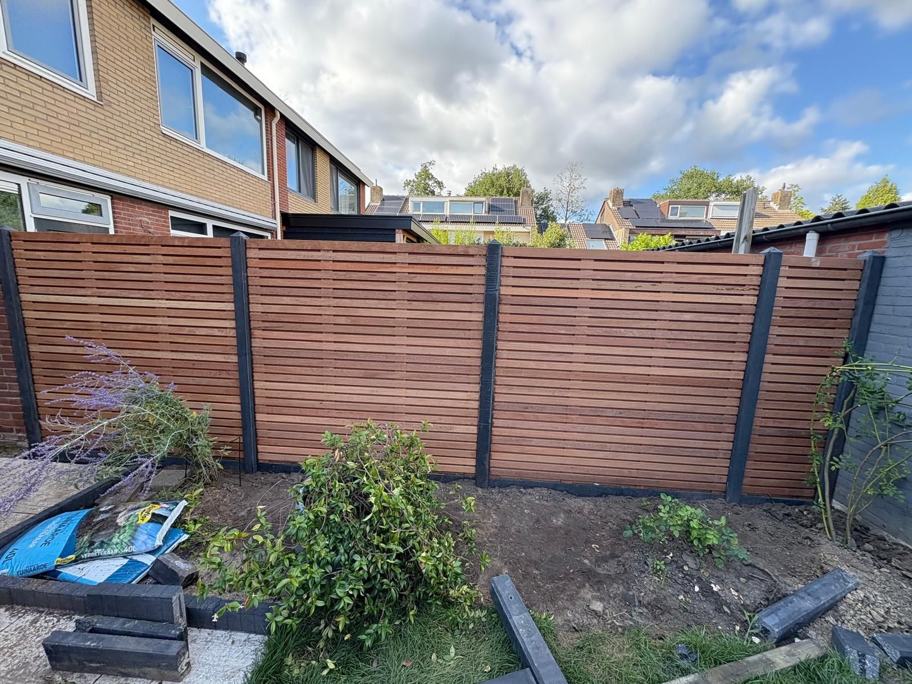

Çalışmalarımız
Dordrecht ve çevresinden projeler
Yakın zamanda yapılmış işlerden bir seçki — bakımdan komple düzenlemeye. Bu sayfa sürekli güncellenir.
Bu projeler yakın zamanda yapılmış işlerden bir seçkidir. Sayfa yeni projelerle sürekli güncellenir.
Benzer bir bahçeniz mi var?
Bahçenize bakalım ve nelerin mümkün olduğunu görelim — tamamen bağlayıcı olmadan.